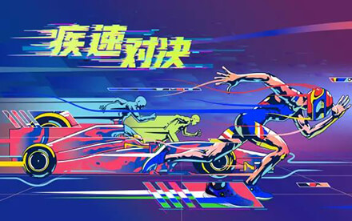

Aloha!
Welcome to My Website
Welcome to My Website
A font-end developer with 2+ years of professional experience, based in Beijing
Working closely with designers and back-end engineers, as a sole front-end or in Agile teams.
Skills:
Taking advantage of my development knowledge I can find the best way to make a layout reliable and consistent.
What I do, Technical Part
Use Chrome DevTools, Toggle Device Mode Or Wechat